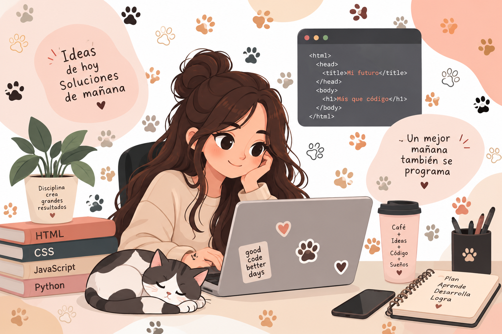

Mi sueño profesional
Crear tecnología que ayude a los animales
Mi trabajo de sueños sería ser desarrolladora de software y utilizar la tecnología para crear soluciones que ayuden al bienestar de los animales.
Me gustaría desarrollar herramientas que faciliten la comunicación entre refugios, rescatistas, cuidadores, personas que desean adoptar y quienes quieren ayudar mediante donaciones o voluntariado.
En el futuro me gustaría crear una plataforma que conecte a todas estas personas y organizaciones para que sea más sencillo encontrar animales que necesitan ayuda y convertir las buenas intenciones en acciones.
Tecnología con propósito
Programar no solamente significa crear aplicaciones; también puede ser una forma de solucionar problemas y generar un impacto positivo.
¿Qué me gustaría crear?

Imagino una plataforma digital donde una persona pueda encontrar fácilmente diferentes formas de ayudar: adoptar, donar, rescatar, cuidar o compartir.
Refugios
Publicar animales que necesitan un hogar y recibir apoyo.
Rescatistas
Compartir casos de animales rescatados y solicitar ayuda.
Personas que ayudan
Encontrar oportunidades para adoptar, donar o participar.
¿Por qué me gustaría tener este trabajo?
- Porque me gusta la tecnología y quiero utilizarla para resolver problemas reales.
- Porque me gustaría contribuir al bienestar y cuidado de los animales.
- Porque podría combinar mi carrera de software con una causa que considero importante.
- Porque tendría la oportunidad de crear soluciones que conecten a personas y organizaciones.
Pasos para alcanzar mi trabajo de sueños
| Paso | Requisito | ¿Qué haría? |
|---|---|---|
| 1 | Formación | Concluir mi carrera de Ingeniería en desarrollo de software. |
| 2 | Programación | Fortalecer mis conocimientos en programación, bases de datos y desarrollo web. |
| 3 | Experiencia | Crear proyectos que me permitan practicar y formar un portafolio. |
| 4 | Conocer el problema | Aprender sobre refugios, rescates, adopciones, donaciones y necesidades de los animales. |
| 5 | Crear una solución | Diseñar y desarrollar una plataforma que conecte a quienes necesitan ayuda con quienes quieren ayudar. |
Mi objetivo
Mi objetivo es convertirme en una desarrolladora de software capaz de utilizar mis conocimientos para crear soluciones tecnológicas útiles. A largo plazo, quiero desarrollar una plataforma que facilite la colaboración entre refugios, rescatistas, cuidadores, adoptantes, donadores y personas voluntarias, con la finalidad de apoyar a más animales.